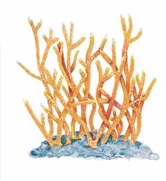
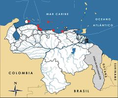

Acropora cervicornis
| Coral cacho de venado | |
|---|---|
|  | |
| Riesgo de extinción | |
 Vulnerable (UICN) | |
| Clasificación científica | |
| Reino: | Animalia |
| Filo: | Cnidaria |
| Clase: | Anthozoa |
| Orden: | Scleractinia |
| Familia: | Acroporidae |
| Género: | Acropora |
| Especie: | Acropora cervicornis |
| Nombre binomial | |
|
Acropora cervicornis Lamarck, 1816 | |
| Distribución | |
|
 Mapa de distribución de Acropora cervicornis | |
Contenido
Información de Evaluación
- Categoría y Criterio Regional: Vulnerable A2ce
- Fecha de Evaluación Regional: 2015
- Evaluadores: Jesús Morales-Campos y Ariany García-Rawlins
- Categoría y Criterio Global: En Peligro Crítico A2ace
Justificación
Evaluaciones Previas
1999: No Evaluado (NE)
2008: Vulnerable (VU)
Información General
Nombres comunes
Coral cacho de venado, staghorn coral.
Notas taxonómicas
Sinónimos
Descripción
Especie de coral que se caracteriza por ser arborescente y muy frágil, compuesta por ramas cilíndricas. Tiene una coloración marrón amarillenta y los extremos blancuzcos. Generalmente se encuentra en aguas someras (0-3 m), aunque puede extenderse hasta 30 m de profundidad. Se localiza en la mitad superior de la pendiente arrecifal y en lagunas de aguas tranquilas y transparentes (Veron 2000). Sus colonias llegan a formar entramados que abarcan muchos metros de largo.
Distribución
Se distribuye en islas oceánicas en la mayor parte de los arrecifes del Caribe, desde el sur de Florida y norte de Bahamas hasta el Caribe Sur en Colombia, Trinidad y Tobago y Venezuela (Precht et al. 2002). Igualmente, se le consigue en el trecho que va desde el norte de Veracruz, en México, hasta Barbados. No se encuentra en Bermudas ni al norte del golfo de México.
- Sistema: Marino
- Bioregión:
- Intervalo altitudinal (m): 60
- Endémica: No
Situación
La especie fue abundante en la región caribeña hasta principios de los años ochenta, cuando un evento de mortandad masiva, causado principalmente por la enfermedad de banda blanca, disminuyó sus poblaciones en más del 95% en algunas áreas (Precht et al. 2002). Los reportes sobre su condición actual en los arrecifes del Caribe son muy variables, al igual que para Acropora palmata (Jaap 1998). En algunas localidades la especie se encuentra totalmente ausente, mientras que en otras la abundancia alcanza valores de hasta tres colonias por metro cuadrado y áreas hasta de 21 hectáreas (Vargas-Ángel et al. 2003, Keck et al. 2005). En Venezuela se desconoce tanto su estado actual como su tamaño poblacional. Según estimaciones, la cobertura promedio relativa de la especie para un arrecife del parque nacional Archipiélago Los Roques era de 47% (Sandia y Medina 1987) y sus densidades alcanzaban de cuatro a cinco colonias por metro cuadrado (S. Márques Pauls obs. pers. 1987). Actualmente son relativamente abundantes en algunos arrecifes de este parque (Keck et al. 2005). En el caso de las comunidades coralinas costeras, las poblaciones se encuentran restringidas a unas pocas localidades con densidades muy bajas. La Unión Internacional para la Conservación de la Naturaleza considera a esta especie En Peligro Crítico desde 2008 (IUCN 2014), situación de amenaza que ratifica recientemente la legislación estadounidense (USFWS 2014). En Colombia se encuentra clasificada como En Peligro Crítico (Reyes et al. 2002a).
- EOO (km2): Temporalmente sin información
- AOO (km2): Temporalmente sin información
- Tendencia Poblacional: Estable
Amenazas
El coral cacho de venado se ve amenazado por tormentas, estrés térmico, enfermedad de la banda blanca, sedimentación, depredación por invertebrados y daños antropogénicos tales como eutroficación, deterioros por embarcaciones y buzos, y contaminación, entre otros.
Conservación
Acropora cervicornis se encuentra incluida en el Apéndice II de la Convención sobre el comercio internacional de especies amenazadas de fauna y flora silvestres y en el Anexo III del Protocolo relativo a las áreas y flora y fauna silvestres especialmente protegidas en la región del Gran Caribe (SPAW 1991, Cites 2014). En Venezuela está resguardada indirectamente gracias al refugio de fauna silvestre de Cuare y los parques nacionales Morrocoy, Mochima, Archipiélago de Los Roques y San Esteban. Es importante llevar a cabo estudios de su escala poblacional y acerca de su diversidad genética. Adicionalmente, se recomienda facilitar la reproducción asexual mediante el trasplante, estabilización y crecimiento de fragmentos, ya que puede ser una herramienta idónea para recuperar a las poblaciones silvestres. De igual forma, es necesario identificar áreas de recuperación e implementar planes de manejo para la especie.
Autorías
Autores originales
Ainhoa L. Zubillaga y Sheila Márques Pauls
Colaboradores
Ilustrador
Ximenamaria Rausseo
Referencias
- Cites. (2014). Apéndices I, II y III (válidos desde el 14 de septiembre de 2014). Convención sobre el Comercio Internacional de Especies Amenazadas de Fauna y Flora Silvestres (CITES). 47 pp.
- IUCN (2014). The IUCN Red List of Threatened Species. Version 2014.3. Accesible en www.iucnredlist.org.
- Keck, J., Houston, R., Purkis, S. y Riegl, B. (2005). Unexpectedly high cover of Acropora cervicornis on offshore reefs in Roatan (Honduras). Coral Reefs 24(3): 509-509.
- Precht, W. F., Bruckner, A. W., Aronson, R. B. y Bruckner, R. J. (2002). Endangered acroporid corals of the Caribbean. Coral Reefs 21: 41-42.
- Reyes, J., Lattig-Matiz, P. y Santodomingo, N. (2002a). Acropora cervicornis. En: Ardila, N., Navas, G. R. y Reyes, J. (Eds.). Libro rojo de los invertebrados marinos de Colombia, Serie Libros Rojos de Especies Amenazadas de Colombia. INVEMAR, Ministerio del Medio Ambiente. Colombia.
- Rodríguez, J. P. y Rojas-Suárez, F. (1999). Libro Rojo de la Fauna Venezolana, segunda edición. PROVITA, Fundación Polar. Caracas. 444 pp.
- Rodríguez, J. P. y Rojas-Suárez, F. (Eds.) (2008). Libro Rojo de la Fauna Venezolana, tercera edición. Provita y Shell Venezuela, S. A. Caracas, Venezuela. 364 pp.
- Sandia, J. A. y Medina, R. J. (1987). Aspectos de la dinámica poblacional de Acropora cervicornis en el Parque Nacional Archipiélago de Los Roques. Trabajo de Grado, Universidad Central de Venezuela, Escuela de Biología. 123 pp.
- SPAW (1991). Procotolo Relativo a las Áreas y a la Flora y Fauna Silvestres Especialmente Protegidas del Convenio para la Protección y el Desarrollo del Medio Marino en la Región del Gran Caribe (conocido como SPAW, por sus siglas en inglés). Anexo III: List of Species of Marine and Coastal Flora and Fauna Protected Under Article 11(1)(c). 11 11(1).
- USFWS (2014). Endangered and Threatened Wildlife and Plants; Adding 20 Coral Species to the List of Endangered and Threatened Wildlife. Federal Register. United States Fish and Wildlife Service (USFWS), Washington, D. C., EE. UU. 79(219): 67356-67359.
- Vargas-Ángel, B., Thomas, J. D. y Hoke, S. M. (2003). High-latitude Acropora cervicornis thickets off Fort Lauderdale, Florida, USA. Coral Reefs 22: 465-473.
- Veron, J. E. N. (2000). Corals of the World. Australian Institute of Marine Science. Townsville, Australia.
- Zubillaga, A. L. y Márques Pauls, S. (2015). Coral cacho de venado, Acropora cervicornis. En: J.P. Rodríguez, A. García-Rawlins y F. Rojas-Suárez (eds.) Libro Rojo de la Fauna Venezolana. Cuarta edición. Provita y Fundación Empresas Polar, Caracas, Venezuela. Recuperado de: animalesamenazados.provita.org.ve/content/coral-cacho-de-venado Jue, 07/06/2018 - 10:28